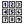

|

|
ActionStep GetDigits Description
Listens for key presses and returns the keys press in a variable.
This ActionStep works well when preceded by StreamAudio or MultiStreamAudio. To use keys pressed during StreamAudio or MultiStreamAudio ActionSteps; set the Property "Use Buffered Digits" equal to true and set the Escape Digits to the desired valid key presses in the StreamAudio or MultiStreamAudio ActionStep. Attributes
|